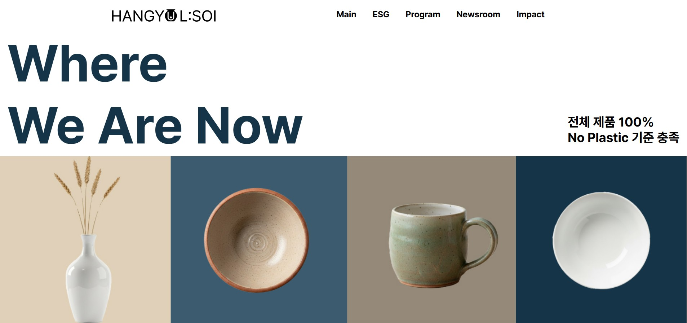

HANGYUL:SOI ESG 웹사이트
브랜드의 ESG 활동과 프로그램을 사용자에게 전달하기 위해 설계한 ESG 웹 프로젝트

Overview
- 프로젝트 HANGYUL:SOI ESG 웹사이트
- 목적 브랜드의 ESG 활동과 프로그램 소개
- 컨셉 Clean · Trust · Sustainable
- 타겟 브랜드의 사회적 가치와 활동에 관심 있는 사용자
- 범위 메인 · ESG · Program · Newsroom · Impact
한 줄 요약
HANGYUL:SOI 프로젝트는 브랜드의 ESG 활동과 프로그램을 사용자가 쉽게 이해할 수 있도록 콘텐츠 구조와 UI 흐름을 설계한 웹사이트입니다.
HANGYUL:SOI 프로젝트는 브랜드의 ESG 활동과 프로그램을 사용자가 쉽게 이해할 수 있도록 콘텐츠 구조와 UI 흐름을 설계한 웹사이트입니다.
ESG
Brand
Sustainability
기획 의도
HANGYUL:SOI 프로젝트는 브랜드의 ESG 활동을
사용자가 직관적으로 이해할 수 있도록
정보 구조와 콘텐츠 흐름을 설계한 웹사이트입니다.
메인 페이지에서는 브랜드의 가치와 메시지를 전달하고
Program과 Impact 섹션을 통해
브랜드의 ESG 활동을 단계적으로 보여주도록 구성했습니다.
또한 미니멀한 레이아웃과 여백 중심 디자인을 통해
브랜드의 신뢰감과 지속가능성을
시각적으로 표현했습니다.
Design Strategy
-
Layout
콘텐츠 중심 레이아웃을 통해 ESG 활동 정보를 직관적으로 전달
Color
깨끗하고 신뢰감을 주는 미니멀 톤 중심 디자인
Interaction
섹션 기반 스크롤 구조와 콘텐츠 강조 인터랙션 적용
브랜드의 ESG 메시지를 전달하기 위해
콘텐츠 흐름을 단순하고 명확하게 구성했습니다.
사용자가 ESG 활동과 프로그램을
자연스럽게 탐색할 수 있도록
섹션 기반 레이아웃과 콘텐츠 구조를 설계했습니다.
My Role
- 기여도 팀 프로젝트 (4인) · 팀장 · 기여도 25%
- 담당 UI 디자인 · 퍼블리싱 · 팀 일정 관리
- 작업 범위 메인 페이지 레이아웃 · 콘텐츠 섹션 구현
- 기술 HTML · CSS · JavaScript
회고 · 배운 점
HANGYUL:SOI 프로젝트에서 팀장을 맡아 프로젝트 진행과
팀원 간의 작업 조율을 담당했습니다.
프로젝트 진행 중 팀원 한 명이 빠지는 상황이 발생하여
남은 팀원들과 역할을 다시 분배하고
일정이 지연되지 않도록 작업을 조율했습니다.
또한 팀원들이 프로젝트에 집중할 수 있도록
지속적으로 소통하며 팀 분위기를 유지하려 노력했습니다.
이 경험을 통해 협업 프로젝트에서는
기술적인 작업뿐 아니라
소통과 역할 조율이 중요하다는 것을 배울 수 있었습니다.